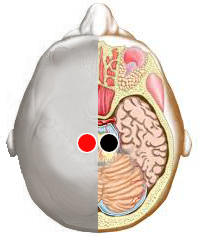

Vitiligo
Pares
pineal - pineal
duodeno - c. descendente
pineal - duodeno
pineal - tiroides
pineal - hígado
pineal - corazón
pineal - suprarrenal

Generalidades:
Disfunción de la glándula pineal . Actúa en pigmentación, sexualidad y sobre las suprarrenales, en la producción de insulina, se lesiona por traumas. Alteraciones en la cicatrización, el sueño, el deseo sexual, la producción de cortisol, acromegalia* también es responsable de la producción de melatonina, hormona con múltiples funciones.
Afecta la pigmentación de la piel cuando se presenta asociada a alteraciones del hígado. Checar pares del hígado.
La glándula pineal es responsable de los ciclos circadianos y por lo tanto regula el sueño; esto mediante la hormona melatonina que se activa con la luz solar y decrece su producción en la noche. La hormona es un potente antioxidante que tiene efectos antiedad en diversos órganos y tejidos, activa al sistema inmune y su producción mejora el síndrome del colon irritable.
La glándula pineal también produce la hormona DMT que provoca estados alucinógenos, probablemente participa en la creación de sueños. Tiene ciertos efectos sobre la hipófisis en la producción de hormonas sexuales. Inhibe el crecimiento de huesos y otros órganos, por eso al afectarse provoca gigantismo o acromegalia. El gigantismo también puede ser causado por mutaciones genéticas, donde pueden estar involucrados cromosomas como el X
La calcificación de esta glándula es común conforme avanza la edad, también se ha encontrado mayor taza de calcificación de la glándula en personas que padecen Alzheimer.
En las tradiciones esotéricas se la asocia con el séptimo chakra coronario o Sahasrara.
*Crecimiento anormal de las extremidades y de los órganos internos del cuerpo.
Ver también el par Vivian.